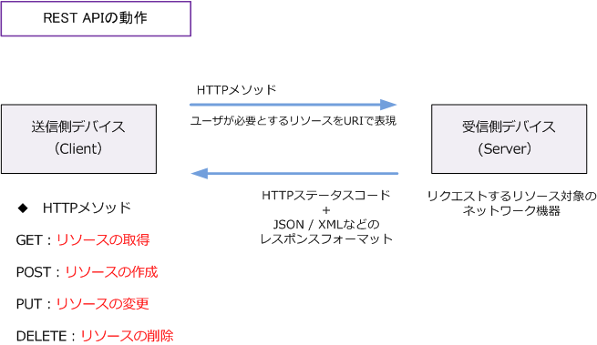
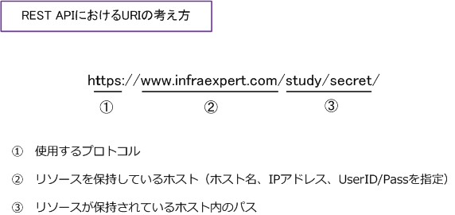

REST API ( RESTful API )
REST APIとは
REST API（RESTful API）は、REST（Representational State Transfer）の原則に基づいて設計されたAPIのことです。 Webシステムを外部から利用するためのAPIであることから、REST APIはWeb APIの1つだと言えます。 REST APIでは、HTTPで定義するGET、POST、PUT、DELETEなどのリクエストでデータを操作します。
※ API（Application Programming Interface）とは、ソフトウェア同士が互いに情報をやりとりする のに使用するインターフェースの仕様のことです。
REST - 4つの設計原則
RESTの原則は、大きく以下の4つに集約できます。※ より詳細に分類する場合は6つの原則と言えます。
原則1：ステートレスなクライアント/サーバプロトコル HTTPメッセージの全てがリクエストを理解するための必要な情報を含んでいることから、HTTP通信を 行うクライアントもサーバもメッセージ間におけるセッションの状態を記憶している必要がありません。 ※ ステートレスと表現していますが、実際には Cookie などを使用しセッション状態を管理しています。
原則2：リソースを一意なURIにより識別される RESTfulなシステムでは全てのリソース（情報）はURI（Uniform Resource Identifier）で表現される ユニークなアドレスを持ちます。
原則3：HTTPメソッドで操作方法を表現した統一されたインターフェース リソースを操作するメソッドは、HTTPで定義されている "GET"、"POST"、"PUT"、"DELETE" などを 使用します。つまり、情報を操作する命令体系があらかじめ定義されています。
原則4：アプリケーション情報と状態遷移の両方を扱えるハイパーメディアの使用 リソースを様々な形式（HTML、XML、JSON、バイナリ）で表現できるようにします。また、関連する データはハイパーメディア（リンク）としてデータに含めることができます。
上述のRESTの4つの原則を以降で詳細に解説していきます。
REST API - 設計原則 その1
REST APIではHTTP技術をベースとしており、HTTPメソッド（GET、POST、PUT、DELETE）などで 送信側から操作方法をHTTPメソッドで表現して、受信側は処理結果をステータスコードで表現しており クライアント/サーバ形態の通信を行います。

ユーザ（クライアント側）が必要とするリソースはURIで表現します。そのリソースに対してどのような 操作を行うのかはHTTPメソッドで示します。受信側デバイス（サーバ側）では受信したHTTPリクエスト に対して、その処理結果をHTTPステータスコード（処理の成功/失敗）といっしょにJSONやXMLなどの レスポンスフォーマットで応答します。
REST API - 設計原則 その2
REST APIでは、URI（Uniform Resource Locator）で、リソースが存在する位置を文字列で示します。

REST API - 設計原則 その3
送信側デバイスから受信したHTTPメソッドに応じ、受信側デバイス（例えばネットワーク機器）は 自身のリソースに対して作成、更新、削除などの動作を行います。このようにリソースに対して行う 主要な動作はCRUDと呼ばれます。
| CRUD | HTTPメソッド | 説明 |
|---|---|---|
| Create | POST/PUT | 作成 |
| Read | GET | 読み取り |
| Update | PUT/PATCH | 更新 |
| Delete | DELETE | 削除 |
REST API - 設計原則 その4
送信側デバイスと受信側デバイスとでは、REST API を通してデータのやり取りが行われますが、 受信データを正常に処理するためには、汎用的なデータ形式に変換し通信を行う必要があります。 リソースを表現するそのデータ形式には色々ありますが、HTMLやテキストだけでなくて、例えば JSON、XML、YAMLなどがあります。
JSON（JavaScript Object Notation）- 拡張子（.json）
JSONはデータ記述言語の1つです。標準的なテキストベースのデータフォーマットであり プログラミング言語を問わずに利用できます。XMLに比べて記述が容易で人が理解しやすい データフォーマットと言えます。
XML（Extensible Markup Language）- 拡張子（.xml）
XMLはマークアップ言語の1つです。マークアップ言語ではタグと呼ばれる特定の文字列で 記述文に情報の意味や構造などを埋め込んでいく言語のことです。HTMLもXMLと同じ様に マークアップ言語ですが、HTMLはWebページ作成に特化しているのに対して、XMLでは 自由度が高く拡張性を備えており、設定情報ファイルの記述など様々な形で利用されます。
YAML（YAML Ain't a Markup Language）- 拡張子（.yaml .yml）
YAMLは構造化されたデータを表現するためのフォーマットです。YAMLではスペースによる インデントを使用して階層構造を表現します。例えばサーバの構成管理ツールのAnsibleでも 設定ファイルのフォーマットとしてYAMLを利用します。
REST API - 設計原則 その4 補足
多くのネットワーク機器では、受信したHTTPリクエストに対し、処理結果をHTTPステータスコード （処理の成功/失敗）と一緒に、「JSON」または「XML」のレスポンスフォーマットで応答します。 ※ Cisco社製品でもSDNコントローラーの設定ガイドにある通り「JSON」か「XML」を使用します。